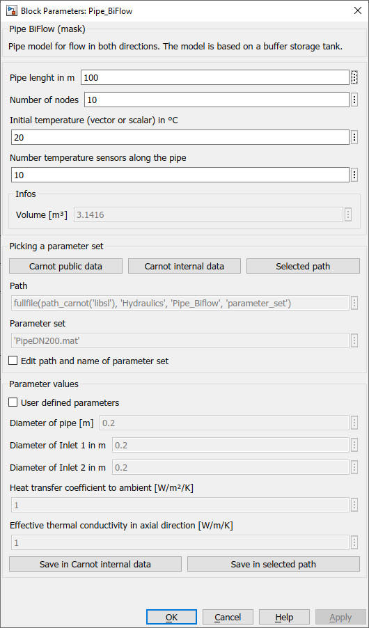

Pipe_BiFlow
Path: CARNOT/Hydraulics
Purpose:
Pipe model for flow in both directions. The model is based on the buffer storage
tank model Storage_Type_N
but has no calculation for inversed thermocline.
Description:
The parameters represent the geometric and thermodynamic data of the storage.
The top mask defines also the number of ports, the number of temperature
sensors and the number of nodes.
The initial temperature can be a scalar value which means one temperature for
all nodes. It may also be a vector with the length “nodes”. In this case each
node is initialized with its individual temperature. The first element in the
vector is the temperature for the node at positon 0.
Geometric values and intial temperatures are determined in the callback
function CarnotCallbacks_StorageTypeN
NOTE:
The storage tank model has no pressure drop calculation adapted to a pipe.
Add a Pressure_Drop_Fix,
Pressure_Drop_PipeTheory or
Pressure_Drop_staticHeight
in the THB at the inlet or outlet of the pipe.
Input:
| Tamb | : | Ambient temperature (for thermal losses) in °C |
| THB_1_in | : | Thermo-Hydraulic Bus of first inlet, entering the pipe at position 1 |
| THB_2_in | : | Thermo-Hydraulic Bus of second inlet, entering the pipe at position 0 |
Output:
| Sdat | : | Storage data bus |
| THB_1_out | : | Thermo-Hydraulic Bus of first outlet, leaving the pipe at positon 0 |
| THB_2_out | : | Thermo-Hydraulic Bus of second outlet, leaving the pipe at position 1 |
Mask Parameters and Dialog Box:

Examples:
Open the example explorer from the Matlab command window
ExampleBrowser
or load the examples via the CARNOT library.
Literature
Patankar: Numerical Heat Tansfer and Fluid Flow, 1980
Characteristics:
| Direct Feedthrough | : | Yes |
| Sample Time | : | Inherited from driving block |
| Vectorized | : | No |